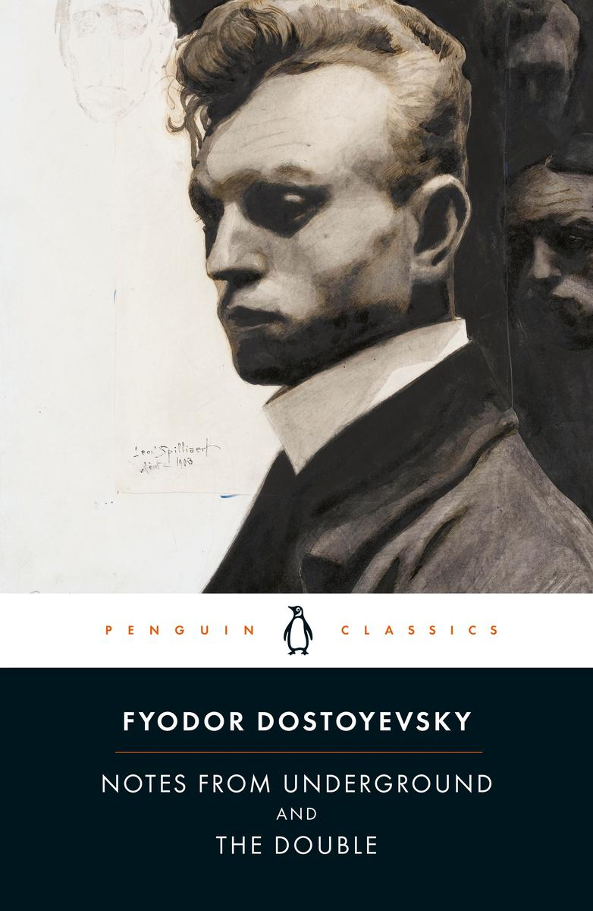
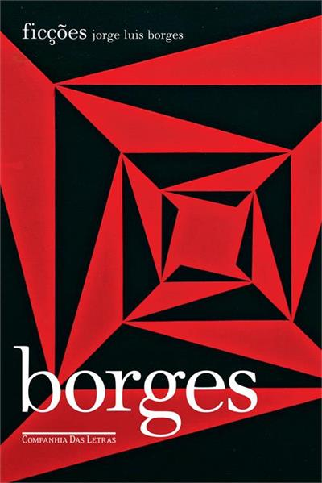
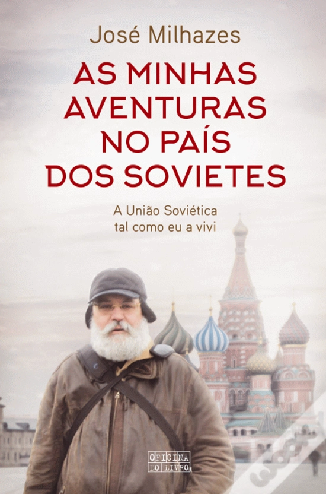
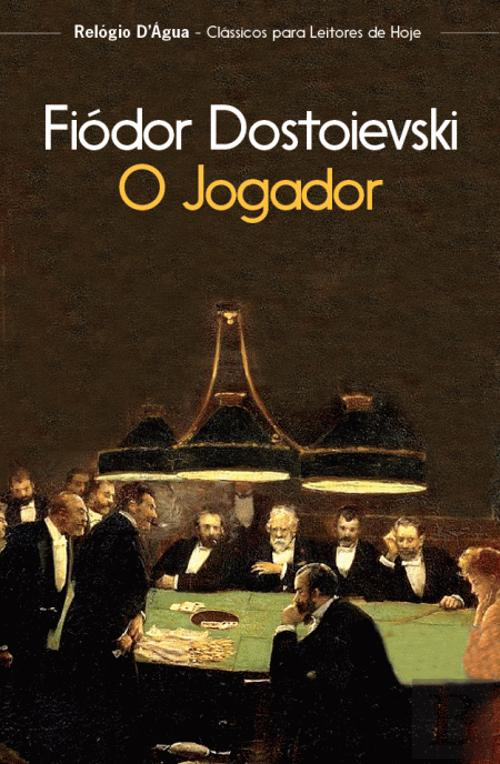

Janeiro — A Casa dos Espíritos
Realismo MágicoUma saga familiar épica que atravessa gerações no Chile, entre magia, amor e turbulência política.
Leituras, recensões e reflexões de João Garção
10 de 12 meses de 2026
Uma leitura por mês, ao longo de 2026





Volta em breve!
Volta em breve!
Volta em breve!